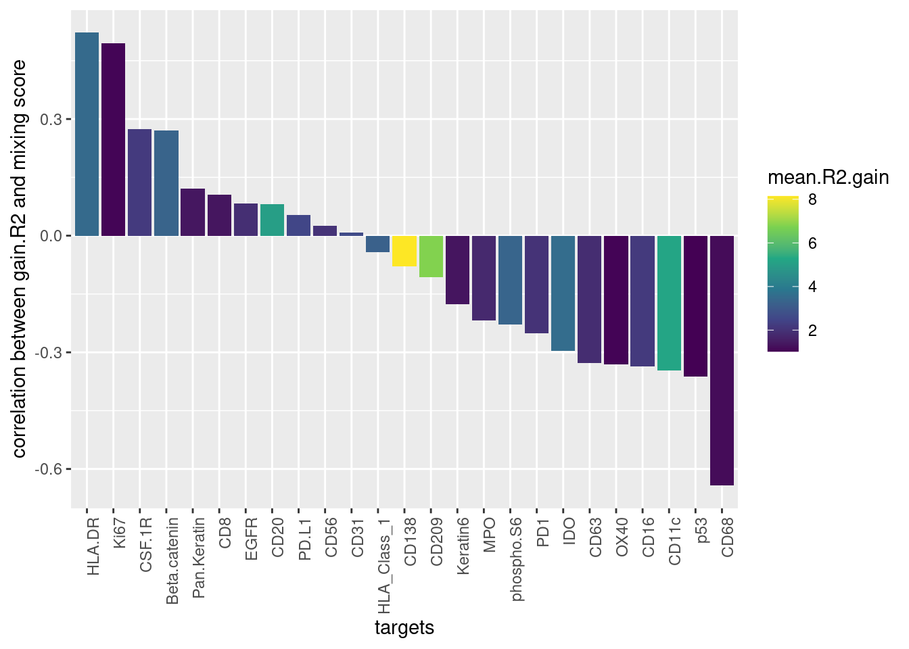
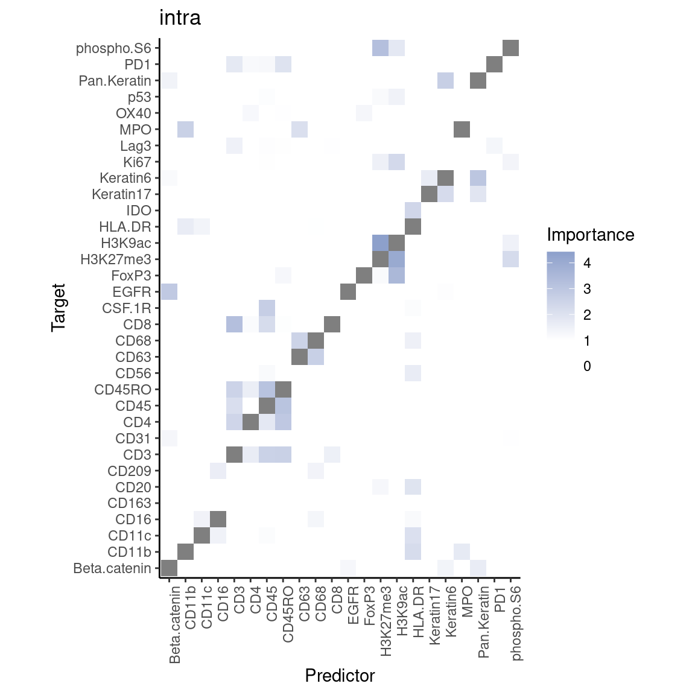
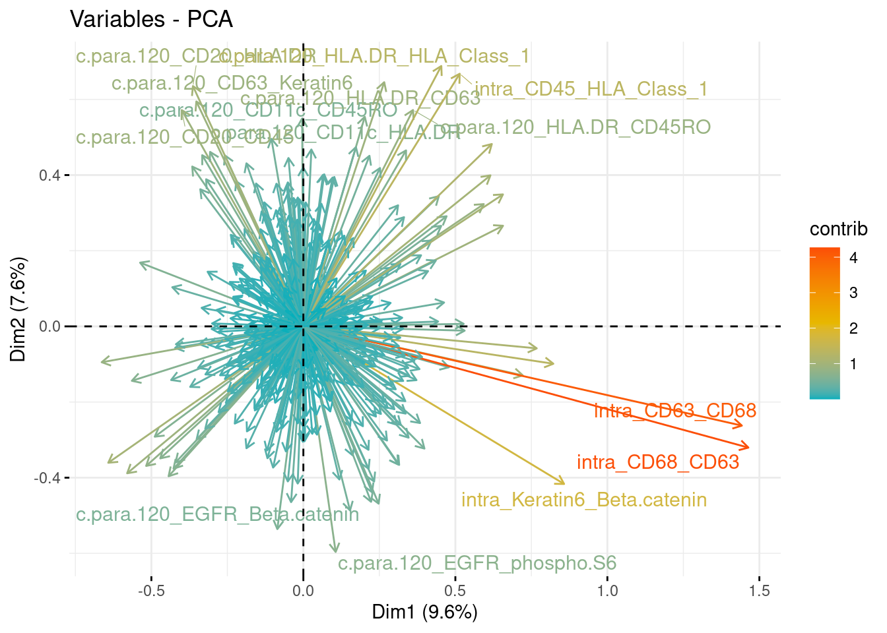
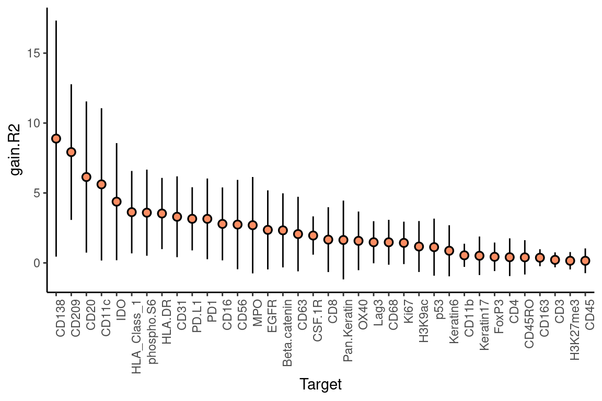
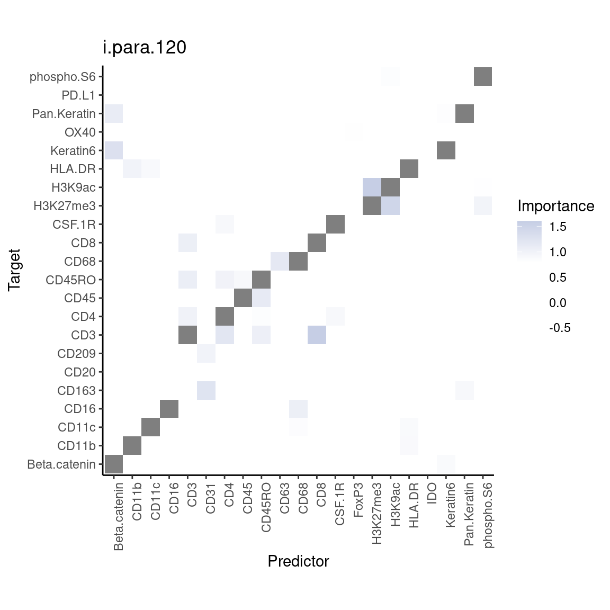
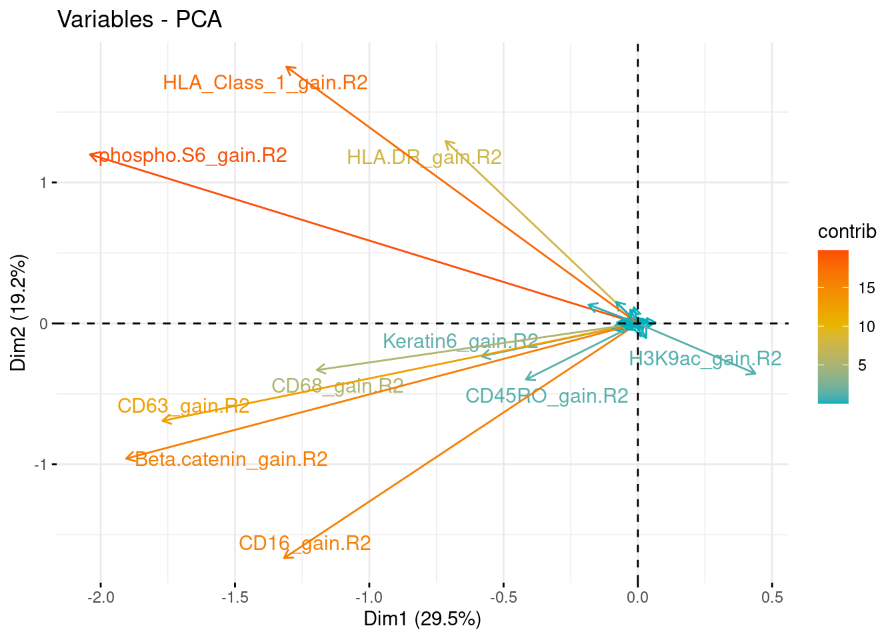

Cell Type-specific Analysis
Last updated: 2021-10-22
Checks: 6 1
Knit directory: mibi_analysis/
This reproducible R Markdown analysis was created with workflowr (version 1.6.2). The Checks tab describes the reproducibility checks that were applied when the results were created. The Past versions tab lists the development history.
Great! Since the R Markdown file has been committed to the Git repository, you know the exact version of the code that produced these results.
Great job! The global environment was empty. Objects defined in the global environment can affect the analysis in your R Markdown file in unknown ways. For reproduciblity it’s best to always run the code in an empty environment.
The command set.seed(20211011) was run prior to running the code in the R Markdown file. Setting a seed ensures that any results that rely on randomness, e.g. subsampling or permutations, are reproducible.
Great job! Recording the operating system, R version, and package versions is critical for reproducibility.
Nice! There were no cached chunks for this analysis, so you can be confident that you successfully produced the results during this run.
Using absolute paths to the files within your workflowr project makes it difficult for you and others to run your code on a different machine. Change the absolute path(s) below to the suggested relative path(s) to make your code more reproducible.
| absolute | relative |
|---|---|
| ~/Saez/workflowr_projects/mibi_analysis/ | . |
Great! You are using Git for version control. Tracking code development and connecting the code version to the results is critical for reproducibility.
The results in this page were generated with repository version 35c39a8. See the Past versions tab to see a history of the changes made to the R Markdown and HTML files.
Note that you need to be careful to ensure that all relevant files for the analysis have been committed to Git prior to generating the results (you can use wflow_publish or wflow_git_commit). workflowr only checks the R Markdown file, but you know if there are other scripts or data files that it depends on. Below is the status of the Git repository when the results were generated:
Ignored files:
Ignored: analysis/cell.specific.results/immune.immune_s1/
Ignored: analysis/cell.specific.results/immune.immune_s10/
Ignored: analysis/cell.specific.results/immune.immune_s11/
Ignored: analysis/cell.specific.results/immune.immune_s12/
Ignored: analysis/cell.specific.results/immune.immune_s13/
Ignored: analysis/cell.specific.results/immune.immune_s14/
Ignored: analysis/cell.specific.results/immune.immune_s15/
Ignored: analysis/cell.specific.results/immune.immune_s16/
Ignored: analysis/cell.specific.results/immune.immune_s17/
Ignored: analysis/cell.specific.results/immune.immune_s18/
Ignored: analysis/cell.specific.results/immune.immune_s19/
Ignored: analysis/cell.specific.results/immune.immune_s2/
Ignored: analysis/cell.specific.results/immune.immune_s20/
Ignored: analysis/cell.specific.results/immune.immune_s21/
Ignored: analysis/cell.specific.results/immune.immune_s22/
Ignored: analysis/cell.specific.results/immune.immune_s23/
Ignored: analysis/cell.specific.results/immune.immune_s24/
Ignored: analysis/cell.specific.results/immune.immune_s25/
Ignored: analysis/cell.specific.results/immune.immune_s26/
Ignored: analysis/cell.specific.results/immune.immune_s27/
Ignored: analysis/cell.specific.results/immune.immune_s28/
Ignored: analysis/cell.specific.results/immune.immune_s29/
Ignored: analysis/cell.specific.results/immune.immune_s3/
Ignored: analysis/cell.specific.results/immune.immune_s31/
Ignored: analysis/cell.specific.results/immune.immune_s32/
Ignored: analysis/cell.specific.results/immune.immune_s33/
Ignored: analysis/cell.specific.results/immune.immune_s34/
Ignored: analysis/cell.specific.results/immune.immune_s35/
Ignored: analysis/cell.specific.results/immune.immune_s36/
Ignored: analysis/cell.specific.results/immune.immune_s37/
Ignored: analysis/cell.specific.results/immune.immune_s38/
Ignored: analysis/cell.specific.results/immune.immune_s39/
Ignored: analysis/cell.specific.results/immune.immune_s4/
Ignored: analysis/cell.specific.results/immune.immune_s40/
Ignored: analysis/cell.specific.results/immune.immune_s41/
Ignored: analysis/cell.specific.results/immune.immune_s5/
Ignored: analysis/cell.specific.results/immune.immune_s6/
Ignored: analysis/cell.specific.results/immune.immune_s7/
Ignored: analysis/cell.specific.results/immune.immune_s8/
Ignored: analysis/cell.specific.results/immune.immune_s9/
Ignored: analysis/results/
Ignored: data/cancer.immune.results.RDS
Ignored: data/cancer.immune.views.RDS
Ignored: data/cellData.csv
Ignored: data/coord.RDS
Ignored: data/coordinates.csv
Ignored: data/earth.results.RDS
Ignored: data/expression.RDS
Ignored: data/expression_per_sample.RDS
Ignored: data/graph.clusters.RDS
Ignored: data/immune.immune.results.RDS
Ignored: data/immune.immune.views.RDS
Ignored: data/lmbag.results.RDS
Ignored: data/meta_data.RDS
Ignored: data/misty_views_smp.RDS
Ignored: data/patient_class.csv
Ignored: data/ranger.results.RDS
Ignored: data/raw_tiffs/
Ignored: data/sample_meta.RDS
Ignored: data/tumor.immune.contacts.RDS
Ignored: old_files/
Note that any generated files, e.g. HTML, png, CSS, etc., are not included in this status report because it is ok for generated content to have uncommitted changes.
These are the previous versions of the repository in which changes were made to the R Markdown (analysis/MISTy_Stratification.Rmd) and HTML (docs/MISTy_Stratification.html) files. If you’ve configured a remote Git repository (see ?wflow_git_remote), click on the hyperlinks in the table below to view the files as they were in that past version.
| File | Version | Author | Date | Message |
|---|---|---|---|---|
| html | 6515710 | schae211 | 2021-10-22 | Build site. |
| Rmd | 5927843 | schae211 | 2021-10-22 | hiding code |
| html | 4df87c6 | schae211 | 2021-10-22 | Build site. |
| html | 8cb127d | schae211 | 2021-10-21 | Build site. |
| html | b575d1a | schae211 | 2021-10-21 | Build site. |
| html | d93e752 | schae211 | 2021-10-20 | Build site. |
| html | ef76a7d | schae211 | 2021-10-20 | Build site. |
| Rmd | 7fae4ce | schae211 | 2021-10-20 | mixing score correlated with number of tumor cells |
| html | 98a7eb6 | schae211 | 2021-10-20 | s.o. |
| Rmd | c5545a8 | schae211 | 2021-10-20 | investigating tumor-immune relationship |
| html | 35c3b36 | schae211 | 2021-10-20 | Build site. |
| Rmd | 9484f24 | schae211 | 2021-10-20 | added questions |
| html | 42bc887 | schae211 | 2021-10-20 | Build site. |
| Rmd | 8bac9f2 | schae211 | 2021-10-20 | new analaysis |
| Rmd | c73137c | schae211 | 2021-10-20 | immune-immune analysis included |
| html | 74c1c9a | schae211 | 2021-10-19 | Build site. |
| html | 5c6e1e1 | schae211 | 2021-10-19 | Build site. |
| Rmd | 667692d | schae211 | 2021-10-19 | created file for comparing different models |
| html | cdd0218 | schae211 | 2021-10-19 | Build site. |
| html | 81cfa53 | schae211 | 2021-10-19 | Build site. |
| html | 0d26834 | schae211 | 2021-10-19 | fix |
| Rmd | defe8c1 | schae211 | 2021-10-19 | added signatures and one stratification by ct |
Set up
Messages will be hidden and the output collapsed to make the Rmd more clear.
knitr::opts_chunk$set(echo = TRUE, collapse = TRUE, message = FALSE)
knitr::opts_knit$set(root.dir = "~/Saez/workflowr_projects/mibi_analysis/")Loaded packages.
library(mistyR)
library(future)
plan("multisession", workers=14)
library(tidyverse)
library(factoextra)Loading data generated in MIBI_Analysis.Rmd
all.expr <- readRDS("data/expression.RDS")
meta <- readRDS("data/meta_data.RDS")
meta.smp <- readRDS("data/sample_meta.RDS")Rationale
I think running MISTy on stratified samples does not make sense since we can easily stratify the results later on based on certain features such as tumor grade, tumor classification, etc. and whether we include a certain sample does not change the MISTy results for another sample.
Therefore, stratification makes more sense on the level of units (here single cells) for example by running MISTy only on immune cells and using only cancer cells to create the paraview. This way we could try to find out which tumor markers influence the immune cell/response.
Computing MISTy views
General Parameters
cv.folds <- 10Tumor -> Immune
Import the get_weight function.
# only removed the constant part here.
get_weight <- function(family = c("gaussian", "exponential", "linear"),
distances, parameter, zoi) {
expr.family <- match.arg(family)
distances[distances < zoi] <- Inf
dim.orig <- dim(distances)
switch(expr.family,
"gaussian" = {
exp(-distances^2 / parameter^2)
},
"exponential" = {
exp(-distances / parameter)
},
"linear" = {
weights <- pmax(0, 1 - distances / parameter)
dim(weights) <- dim.orig
weights
}
)
}Show how the cancer -> immune views are genereated for the first sample.
# Get expression, positions, and types for a sample
expr <- all.expr[meta$SampleID == 1, ] %>% select(11:47)
pos <- meta %>% filter(SampleID == 1) %>% select(row, col)
types <- meta %>% filter(SampleID == 1) %>% pull(Group)
# Get the ids of immune cells
immune.ids <- which(types == "Immune")
# Get the ids of cancer cells
cancer.ids <- which(types %in% c("Keratin-positive tumor", "Tumor"))
# Get the distances between all cells
dists <- distances::distances(as.data.frame(pos))
# Parameters for get weight
l <- 120
zoi <- 40
family <- "gaussian"
view.df <- map_dfr(immune.ids, function(i) {
weights <- get_weight(family, dists[i, ], l, zoi)
weighted.sum <- colSums(expr[cancer.ids, ] * weights[cancer.ids])
data.frame(t(weighted.sum))
})
# Sanity Check for view.df
# 1. Check for zero variance (otherwise MISTy throws an error)
target.var <- apply(view.df, 2, stats::sd, na.rm = TRUE)
view.df <- view.df %>% select(-names(which(target.var == 0)))
# 2. Check for how many unique values
target.unique <- colnames(view.df) %>%
purrr::set_names() %>%
purrr::map_int(~ length(unique(view.df %>% pull(.x))))
view.df <- view.df %>% select(
names(target.unique[target.unique > cv.folds])
)
view <- create_view(paste0("cancer.paraview.", l),
view.df,
paste0("c.para.", l))
# Sanity Check for intra.df
# 1. Check for zero variance (otherwise MISTy throws an error)
intra.df <- expr[immune.ids,]
target.var <- apply(intra.df, 2, stats::sd, na.rm = TRUE)
intra.df <- intra.df %>% select(-names(which(target.var == 0)))
# 2. Check for how many unique values
target.unique <- colnames(intra.df) %>%
purrr::set_names() %>%
purrr::map_int(~ length(unique(intra.df %>% pull(.x))))
intra.df <- intra.df %>% select(
names(target.unique[target.unique > cv.folds])
)
# Make correct colnames
colnames(intra.df) <- make.names(colnames(intra.df))
colnames(view.df) <- make.names(colnames(view.df))
# Create custom "paraview"
view <- create_view(paste0("cancer.paraview.", l),
view.df,
paste0("c.para.", l))
misty.views <- create_initial_view(intra.df) %>%
add_views(view)Check whether we can run MISTy.
Now the same for every sample. Plus views will be saved.
if ("cancer.immune.views.RDS" %in% list.files("data")) {
cancer.immune.views <- readRDS("data/cancer.immune.views.RDS")
} else {
# Set parameters
l <- 120
zoi <- 40
family <- "gaussian"
# Map over all samples and compute the cancer -> immune view
cancer.immune.views <- furrr::future_map(unique(meta$SampleID), function(id) {
# Get expression, positions, and types for a sample
expr <- all.expr[meta$SampleID == id, ] %>% select(11:47)
pos <- meta %>% filter(SampleID == id) %>% select(row, col)
types <- meta %>% filter(SampleID == id) %>% pull(Group)
# Get the ids of immune cells
immune.ids <- which(types == "Immune")
# Get the ids of cancer cells
cancer.ids <- which(types %in% c("Keratin-positive tumor", "Tumor"))
# Get the distances between all cells
dists <- distances::distances(as.data.frame(pos))
view.df <- map_dfr(immune.ids, function(i) {
weights <- get_weight(family, dists[i, ], l, zoi)
weighted.sum <- colSums(expr[cancer.ids, ] * weights[cancer.ids])
data.frame(t(weighted.sum))
})
# Sanity Check for view.df
# 1. Check for zero variance (otherwise MISTy throws an error)
target.var <- apply(view.df, 2, stats::sd, na.rm = TRUE)
view.df <- view.df %>% select(-names(which(target.var == 0)))
# 2. Check for how many unique values
target.unique <- colnames(view.df) %>%
purrr::set_names() %>%
purrr::map_int(~ length(unique(view.df %>% pull(.x))))
view.df <- view.df %>% select(
names(target.unique[target.unique > cv.folds])
)
# Sanity Check for intra.df
# 1. Check for zero variance (otherwise MISTy throws an error)
intra.df <- expr[immune.ids,]
target.var <- apply(intra.df, 2, stats::sd, na.rm = TRUE)
intra.df <- intra.df %>% select(-names(which(target.var == 0)))
# 2. Check for how many unique values
target.unique <- colnames(intra.df) %>%
purrr::set_names() %>%
purrr::map_int(~ length(unique(intra.df %>% pull(.x))))
intra.df <- intra.df %>% select(
names(target.unique[target.unique > cv.folds])
)
# Make correct colnames
colnames(intra.df) <- make.names(colnames(intra.df))
colnames(view.df) <- make.names(colnames(view.df))
# Create custom "paraview"
view <- create_view(paste0("cancer.paraview.", l),
view.df,
paste0("c.para.", l))
# Add all in return.views
return.views <- create_initial_view(intra.df) %>%
add_views(view)
return.views
})
names(cancer.immune.views) <- names(expr.smp)
saveRDS(cancer.immune.views, "data/cancer.immune.views.RDS")
}Immune -> Immune
if ("immune.immune.views.RDS" %in% list.files("data")) {
immune.immune.views <- readRDS("data/immune.immune.views.RDS")
} else {
# Set parameters
l <- 120
zoi <- 40
family <- "gaussian"
# Map over all samples and compute the cancer -> immune view
immune.immune.views <- furrr::future_map(unique(meta$SampleID), function(id) {
# Get expression, positions, and types for a sample
expr <- all.expr[meta$SampleID == id, ] %>% select(11:47)
pos <- meta %>% filter(SampleID == id) %>% select(row, col)
types <- meta %>% filter(SampleID == id) %>% pull(Group)
# Get the ids of immune cells
immune.ids <- which(types == "Immune")
# Get the distances between all cells
dists <- distances::distances(as.data.frame(pos))
view.df <- map_dfr(immune.ids, function(i) {
weights <- get_weight(family, dists[i, ], l, zoi)
weighted.sum <- colSums(expr[immune.ids, ] * weights[immune.ids])
data.frame(t(weighted.sum))
})
# Sanity Check for view.df
# 1. Check for zero variance (otherwise MISTy throws an error)
target.var <- apply(view.df, 2, stats::sd, na.rm = TRUE)
view.df <- view.df %>% select(-names(which(target.var == 0)))
# 2. Check for how many unique values
target.unique <- colnames(view.df) %>%
purrr::set_names() %>%
purrr::map_int(~ length(unique(view.df %>% pull(.x))))
view.df <- view.df %>% select(
names(target.unique[target.unique > cv.folds])
)
# Sanity Check for intra.df
# 1. Check for zero variance (otherwise MISTy throws an error)
intra.df <- expr[immune.ids,]
target.var <- apply(intra.df, 2, stats::sd, na.rm = TRUE)
intra.df <- intra.df %>% select(-names(which(target.var == 0)))
# 2. Check for how many unique values
target.unique <- colnames(intra.df) %>%
purrr::set_names() %>%
purrr::map_int(~ length(unique(intra.df %>% pull(.x))))
intra.df <- intra.df %>% select(
names(target.unique[target.unique > cv.folds])
)
# Make correct colnames
colnames(intra.df) <- make.names(colnames(intra.df))
colnames(view.df) <- make.names(colnames(view.df))
# Create custom "paraview"
view <- create_view(paste0("immune.paraview.", l),
view.df,
paste0("i.para.", l))
# Add all in return.views
return.views <- create_initial_view(intra.df) %>%
add_views(view)
return.views
})
names(immune.immune.views) <- names(expr.smp)
saveRDS(immune.immune.views, "data/immune.immune.views.RDS")
}Running MISTy
Tumor -> Immune
if ("cancer.immune.results.RDS" %in% list.files("data")) {
cancer.immune.results <- readRDS("data/cancer.immune.results.RDS")
} else {
cv.folds = 10
cancer.immune.folders <- map2(
cancer.immune.views, names(cancer.immune.views), function(smp, name) {
smp %>% run_misty(
results.folder = paste0("analysis/cell.specific.results/cancer.immune_",
name),
cv.folds = cv.folds)
})
cancer.immune.results <- collect_results(cancer.immune.folders)
saveRDS(cancer.immune.results, "data/cancer.immune.results.RDS")
}Immune -> Immune
if ("immune.immune.results.RDS" %in% list.files("data")) {
immune.immune.results <- readRDS("data/immune.immune.results.RDS")
} else {
cv.folds = 10
immune.immune.folders <- map2(
immune.immune.views, names(immune.immune.views), function(smp, name) {
smp %>% run_misty(
results.folder = paste0("analysis/cell.specific.results/immune.immune_",
name),
cv.folds = cv.folds)
})
immune.immune.results <- collect_results(immune.immune.folders)
saveRDS(immune.immune.results, "data/immune.immune.results.RDS")
}MISTy Results
Tumor -> Immune
Gain.R2
We see quite some gain in variance explained for IDO which is an immunoregulatory protein. The same is true for PD-L1
mistyR::plot_improvement_stats(cancer.immune.results, measure = "gain.R2")
However, the mean p-values are rather high because there is such a large variability between the samples.
cancer.immune.results$improvements %>%
group_by(target, measure) %>%
summarise(mean = round(mean(value), 2), median = round(median(value), 2),
.groups = "keep") %>%
pivot_longer(cols = c(mean, median), names_to = "summary") %>%
pivot_wider(names_from = measure, values_from = value) %>%
select(c(target, summary, gain.R2, gain.RMSE, p.R2, p.RMSE)) %>%
filter(target %in% c("CD138", "CD209", "CD11c", "CD20", "IDO", "PD.L1", "PD1")) %>%
knitr::kable()| target | summary | gain.R2 | gain.RMSE | p.R2 | p.RMSE |
|---|---|---|---|---|---|
| CD11c | mean | 5.12 | 4.55 | 0.18 | 0.25 |
| CD11c | median | 4.27 | 3.70 | 0.10 | 0.28 |
| CD138 | mean | 7.69 | 4.72 | NA | 0.33 |
| CD138 | median | 5.68 | 2.97 | NA | 0.41 |
| CD20 | mean | 4.82 | 3.28 | 0.13 | 0.28 |
| CD20 | median | 2.79 | 2.37 | 0.04 | 0.29 |
| CD209 | mean | 6.79 | 2.47 | 0.14 | 0.37 |
| CD209 | median | 5.60 | 3.83 | 0.06 | 0.41 |
| IDO | mean | 3.35 | 2.17 | 0.28 | 0.37 |
| IDO | median | 2.80 | 1.94 | 0.27 | 0.42 |
| PD.L1 | mean | 2.40 | 1.90 | 0.28 | 0.39 |
| PD.L1 | median | 2.26 | 1.86 | 0.26 | 0.43 |
| PD1 | mean | 1.91 | 1.39 | 0.33 | 0.43 |
| PD1 | median | 1.49 | 0.92 | 0.34 | 0.46 |
So what happens if we actually stratify the samples here based on the classification (e.g. hoping to find a much stronger PD-L1 signal in the compartimentalized samples).
And in fact it is true that the gain in variance is higher for those immunoregulatory proteins in compartimentalized tumors.
cancer.immune.results$improvements %>%
mutate(SampleID = str_extract(sample, "(?<=_s)[0-9]+")) %>%
left_join(meta.smp, by = "SampleID") %>%
filter(measure == "gain.R2") %>%
filter(Classification != "cold") %>%
ggplot() +
geom_boxplot(aes(x = reorder(target, -value), y = value, col = Classification)) +
theme(axis.text.x = element_text(angle = 90, hjust = 1))
Checking the values for immunoregulatory proteins.
First by summarizing using the mean.
cancer.immune.results$improvements %>%
mutate(SampleID = str_extract(sample, "(?<=_s)[0-9]+")) %>%
left_join(meta.smp, by = "SampleID") %>%
filter(Classification != "cold") %>%
filter(target %in% c("IDO", "PD.L1", "PD1")) %>%
group_by(target, Classification, measure) %>%
summarise(mean.measure = round(mean(value, na.rm=TRUE),2),
.groups="keep") %>%
pivot_wider(names_from = measure, values_from = mean.measure)And then the median.
cancer.immune.results$improvements %>%
mutate(SampleID = str_extract(sample, "(?<=_s)[0-9]+")) %>%
left_join(meta.smp, by = "SampleID") %>%
filter(Classification != "cold") %>%
filter(target %in% c("IDO", "PD.L1", "PD1")) %>%
group_by(target, Classification, measure) %>%
summarise(mean.measure = round(median(value, na.rm=TRUE), 2),
.groups="keep") %>%
pivot_wider(names_from = measure, values_from = mean.measure)Also interestingly the gain in variance explained is negatively correlated with the mixing score, meaning the more contact there is between immune and tumor cells the less variance can be explained for IDO.
cor(x = cancer.immune.results$improvements %>%
mutate(SampleID = str_extract(sample, "(?<=_s)[0-9]+")) %>%
left_join(meta.smp, by = "SampleID") %>%
filter(Classification != "cold") %>%
filter(target == "IDO") %>%
filter(measure == "gain.R2") %>%
filter(ratio.tumor.immune < 300) %>%
pull(value),
y = cancer.immune.results$improvements %>%
mutate(SampleID = str_extract(sample, "(?<=_s)[0-9]+")) %>%
left_join(meta.smp, by = "SampleID") %>%
filter(Classification != "cold") %>%
filter(target == "IDO") %>%
filter(measure == "gain.R2") %>%
filter(ratio.tumor.immune < 300) %>%
pull(ratio.tumor.immune))
[1] -0.2969536
cancer.immune.results$improvements %>%
mutate(SampleID = str_extract(sample, "(?<=_s)[0-9]+")) %>%
left_join(meta.smp, by = "SampleID") %>%
filter(Classification != "cold") %>%
filter(target == "IDO") %>%
filter(measure == "gain.R2") %>%
filter(ratio.tumor.immune < 300) %>%
ggplot() +
geom_point(aes(x=ratio.tumor.immune, y=value)) +
geom_smooth(aes(x=ratio.tumor.immune, y=value), method="lm", formula = y ~ x)
What about the other targets? There are positive and negative correlations of the gain in variance explained and the tumor-immune mixing score.
cancer.immune.results$improvements %>%
mutate(SampleID = str_extract(sample, "(?<=_s)[0-9]+")) %>%
left_join(meta.smp, by = "SampleID") %>%
filter(measure == "gain.R2") %>%
filter(ratio.tumor.immune < 300) %>%
group_by(target) %>%
summarise(c = cor(value, ratio.tumor.immune), mean.R2.gain = mean(value)) %>%
filter(mean.R2.gain >= 1) %>%
ggplot() +
geom_bar(aes(x=reorder(target, -c), y=c, fill=mean.R2.gain), stat="identity") +
theme(axis.text.x = element_text(angle = 90, hjust = 1)) +
labs(y = "correlation between gain.R2 and mixing score", x = "targets") +
scale_fill_viridis_c()
View Contributions
mistyR::plot_view_contributions(cancer.immune.results)
Importances
Intraview:
mistyR::plot_interaction_heatmap(cancer.immune.results, view = "intra",
clean = TRUE)
Paraview:
mistyR::plot_interaction_heatmap(cancer.immune.results, view = "c.para.120",
clean = TRUE, cutoff = .8)
Signatures
Performance
cancer.immune.perf.sig <- mistyR::extract_signature(cancer.immune.results,
"performance")
cancer.immune.perf.pca <- stats::prcomp(cancer.immune.perf.sig %>%
select(-sample))ggplot() +
geom_point(aes(x=cancer.immune.perf.pca$x[,1],
y=cancer.immune.perf.pca$x[,2],
col=factor(meta.smp$GRADE)))
fviz_pca_var(cancer.immune.perf.pca, col.var="contrib",
gradient.cols = c("#00AFBB", "#E7B800", "#FC4E07"),
repel = TRUE)
Warning: ggrepel: 27 unlabeled data points (too many overlaps). Consider
increasing max.overlaps
Importances:
cancer.immune.imp.sig <- mistyR::extract_signature(cancer.immune.results,
"importance")
cancer.immune.imp.pca <- stats::prcomp(cancer.immune.imp.sig %>%
select(-sample))ggplot() +
geom_point(aes(x=cancer.immune.imp.pca$x[,1],
y=cancer.immune.imp.pca$x[,2],
col=factor(meta.smp$GRADE)))
| Version | Author | Date |
|---|---|---|
| ef76a7d | schae211 | 2021-10-20 |
fviz_pca_var(cancer.immune.imp.pca, col.var="contrib",
gradient.cols = c("#00AFBB", "#E7B800", "#FC4E07"),
repel = TRUE)
Warning: ggrepel: 550 unlabeled data points (too many overlaps). Consider
increasing max.overlaps
Immune -> Immune
Gain.R2
mistyR::plot_improvement_stats(immune.immune.results, measure = "gain.R2")
View Contributions
mistyR::plot_view_contributions(immune.immune.results)
Importances
Intraview:
mistyR::plot_interaction_heatmap(immune.immune.results, view = "intra",
clean = TRUE)
Paraview:
mistyR::plot_interaction_heatmap(immune.immune.results, view = "i.para.120",
clean = TRUE, cutoff = .8)
Signatures
Performance
immune.immune.perf.sig <- mistyR::extract_signature(immune.immune.results,
"performance")
immune.immune.perf.pca <- stats::prcomp(immune.immune.perf.sig %>%
select(-sample))ggplot() +
geom_point(aes(x=immune.immune.perf.pca$x[,1],
y=immune.immune.perf.pca$x[,2],
col=factor(meta.smp$GRADE)))
| Version | Author | Date |
|---|---|---|
| ef76a7d | schae211 | 2021-10-20 |
fviz_pca_var(immune.immune.perf.pca, col.var="contrib",
gradient.cols = c("#00AFBB", "#E7B800", "#FC4E07"),
repel = TRUE)
Warning: ggrepel: 26 unlabeled data points (too many overlaps). Consider
increasing max.overlaps
Importances:
immune.immune.imp.sig <- mistyR::extract_signature(immune.immune.results,
"importance")
immune.immune.imp.pca <- stats::prcomp(immune.immune.imp.sig %>%
select(-sample))ggplot() +
geom_point(aes(x=immune.immune.imp.pca$x[,1],
y=immune.immune.imp.pca$x[,2],
col=factor(meta.smp$GRADE)))
| Version | Author | Date |
|---|---|---|
| ef76a7d | schae211 | 2021-10-20 |
fviz_pca_var(immune.immune.imp.pca, col.var="contrib",
gradient.cols = c("#00AFBB", "#E7B800", "#FC4E07"),
repel = TRUE)
Warning: ggrepel: 556 unlabeled data points (too many overlaps). Consider
increasing max.overlaps
sessionInfo()
R version 4.1.1 (2021-08-10)
Platform: x86_64-pc-linux-gnu (64-bit)
Running under: Ubuntu 20.04.3 LTS
Matrix products: default
BLAS: /usr/lib/x86_64-linux-gnu/blas/libblas.so.3.9.0
LAPACK: /usr/lib/x86_64-linux-gnu/lapack/liblapack.so.3.9.0
locale:
[1] LC_CTYPE=en_US.UTF-8 LC_NUMERIC=C
[3] LC_TIME=en_US.UTF-8 LC_COLLATE=en_US.UTF-8
[5] LC_MONETARY=en_US.UTF-8 LC_MESSAGES=en_US.UTF-8
[7] LC_PAPER=en_US.UTF-8 LC_NAME=C
[9] LC_ADDRESS=C LC_TELEPHONE=C
[11] LC_MEASUREMENT=en_US.UTF-8 LC_IDENTIFICATION=C
attached base packages:
[1] stats graphics grDevices utils datasets methods base
other attached packages:
[1] factoextra_1.0.7 forcats_0.5.1 stringr_1.4.0 dplyr_1.0.7
[5] purrr_0.3.4 readr_2.0.2 tidyr_1.1.4 tibble_3.1.5
[9] ggplot2_3.3.5 tidyverse_1.3.1 future_1.22.1 mistyR_1.1.10
[13] workflowr_1.6.2
loaded via a namespace (and not attached):
[1] nlme_3.1-152 fs_1.5.0 lubridate_1.8.0 RColorBrewer_1.1-2
[5] httr_1.4.2 rprojroot_2.0.2 tools_4.1.1 backports_1.2.1
[9] bslib_0.3.1 utf8_1.2.2 R6_2.5.1 DBI_1.1.1
[13] mgcv_1.8-38 colorspace_2.0-2 withr_2.4.2 tidyselect_1.1.1
[17] curl_4.3.2 compiler_4.1.1 git2r_0.28.0 cli_3.0.1
[21] rvest_1.0.1 xml2_1.3.2 labeling_0.4.2 sass_0.4.0
[25] scales_1.1.1 distances_0.1.8 digest_0.6.28 foreign_0.8-81
[29] rmarkdown_2.11 rio_0.5.27 pkgconfig_2.0.3 htmltools_0.5.2
[33] parallelly_1.28.1 dbplyr_2.1.1 fastmap_1.1.0 highr_0.9
[37] rlang_0.4.11 readxl_1.3.1 rstudioapi_0.13 jquerylib_0.1.4
[41] generics_0.1.0 farver_2.1.0 jsonlite_1.7.2 zip_2.2.0
[45] car_3.0-11 magrittr_2.0.1 rlist_0.4.6.2 Matrix_1.3-4
[49] Rcpp_1.0.7 munsell_0.5.0 fansi_0.5.0 abind_1.4-5
[53] lifecycle_1.0.1 stringi_1.7.5 whisker_0.4 yaml_2.2.1
[57] carData_3.0-4 grid_4.1.1 parallel_4.1.1 listenv_0.8.0
[61] promises_1.2.0.1 ggrepel_0.9.1 crayon_1.4.1 lattice_0.20-45
[65] haven_2.4.3 splines_4.1.1 hms_1.1.1 knitr_1.36
[69] pillar_1.6.3 ggpubr_0.4.0 ggsignif_0.6.3 codetools_0.2-18
[73] reprex_2.0.1 glue_1.4.2 evaluate_0.14 data.table_1.14.2
[77] modelr_0.1.8 vctrs_0.3.8 tzdb_0.1.2 httpuv_1.6.3
[81] cellranger_1.1.0 gtable_0.3.0 assertthat_0.2.1 openxlsx_4.2.4
[85] xfun_0.26 broom_0.7.9 rstatix_0.7.0 later_1.3.0
[89] viridisLite_0.4.0 globals_0.14.0 ellipsis_0.3.2